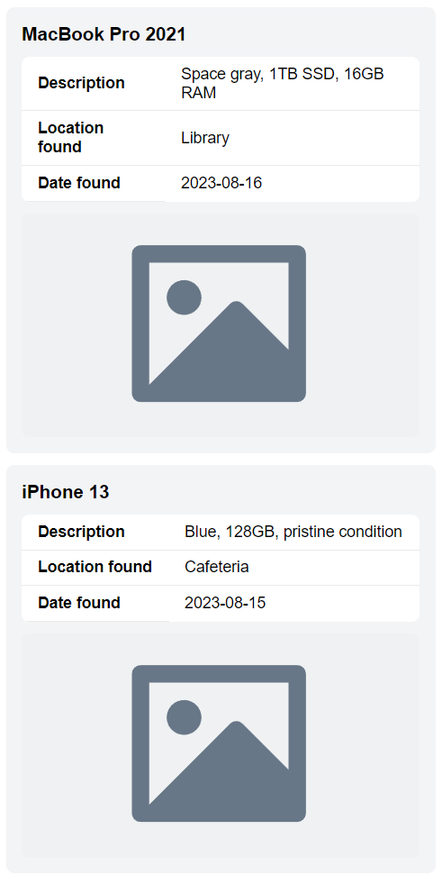

Тема: КАСКАДНІ ТАБЛИЦІ СТИЛІВ. СЕЛЕКТОРИ .ІДЕНТИФІКАТОРИ. СТИЛЬОВЕ ОФОРМЛЕННЯ ТЕКСТОВИХ ЕЛЕМЕНТІВ В HTML-ДОКУМЕНТАХ.
Мета: придбати практичні навички роботи з селекторами, ідентифікаторами, списками, різноманітними властивостями кольору і фону, зовнішними та внутрішними відступами, плаваючими елементами, оформленням текстових елементів
-
Спосіб підключення стилів
<link rel="stylesheet" href="../style.css"> -
Селектори
-
Селектори тегу
button { cursor: pointer; color: #ffffff; background-color: #6366f1; display: inline-flex; align-items: center; justify-content: center; padding: 8px 16px; }
-
Селектори класу
.items { display: flex; flex-direction: column; gap: 0.75rem; } -
Селектори ідентифікатору
#search { flex: 1; }
-
Інші селектори
label[for="search"] { color: #6b7280; }
-
-
CSS: Шрифти Текст Таблиці Фон Контур Списки CSS просунутий
body { font-family: sans-serif; min-height: 100vh; display: flex; flex-direction: column; gap: 2rem; align-items: center; } input, textarea, button { height: 40px; padding: 8px; font-size: 0.875rem; border-radius: 0.375rem; border: 1px solid #e5e7eb; } table { width: 100%; border-collapse: separate; border-spacing: 0; border-radius: 8px; overflow: hidden; background: white; } li { list-style: none; }
Висновки
Виконання лабораторної роботи №2 з каскадних таблиць стилів дозволило здобути практичні навички використання CSS для структурування та оформлення веб-сторінок. Засвоївши роботу з селекторами та ідентифікаторами, було вивчено методи стилізації текстових елементів та управління відступами. Набуті знання є фундаментом для подальшої роботи над більш складними веб-проектами та розширення професійного портфоліо у сфері веб-розробки.